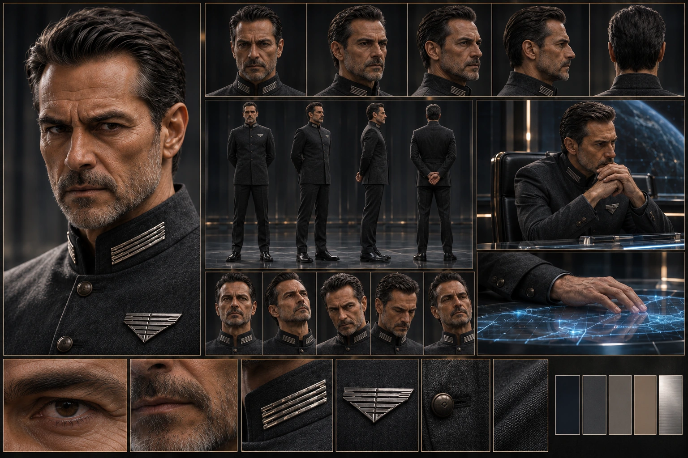

ОСНОВНА ІНФОРМАЦІЯ
Головний координатор Другого плану
Рауль очолює координацію людства Другого плану. Він представляє його інтереси на переговорах із керівниками інших світів, бере участь у формуванні спільної стратегії та узгоджує політичні й практичні рішення під час війни.
Ім’я: Рауль
Посада: головний координатор Другого плану
Сфера відповідальності: політична координація, оборона, евакуація, міжпланова взаємодія
Ключові союзники: Рамос, Сухум, Миколай та керівники інших напрямів
Зовнішність: зрілий чоловік із темним волоссям із сивиною та короткою бородою
Зріст: приблизно 183 см за візуальним патерном
Одяг: темна формена куртка зі строгим коміром і металевим знаком
ХАРАКТЕР І СТИЛЬ КЕРІВНИЦТВА
Холодний розум і відповідальність
У сценах переговорів і нарад Рауль постає зваженим та прагматичним керівником. Він не приймає масштабні пропозиції лише через їхню привабливість: спершу оцінює слабкі місця, ресурси, ризики та наслідки для населення. Водночас, побачивши реалістичний шанс, готовий підтримати навіть надзвичайно складний спільний план.
Рауль розуміє політичний тиск усередині власного світу й усвідомлює, наскільки важко пояснити громадянам загрозу та необхідність непопулярних рішень. Він обирає говорити правду поступово, зважаючи на готовність суспільства її прийняти.
СЮЖЕТНА ЛІНІЯ
Від підготовки до спільної оборони
Ще до відкритого зіткнення з флотом рогатих Рауль бере участь у підготовці Другого плану до війни. Він координує взаємодію з характерниками та приймає допомогу, необхідну для посилення оборони. У розмовах із Сухумом визнає, що частина політиків може побачити в евакуації єдиний шанс урятуватися, і що переконати їх буде непросто.
Під час переговорів про об’єднання зусиль трьох планів Рауль уважно розглядає запропоновану стратегію, ставить уточнювальні запитання й разом із Рамосом пропонує зміни. Зрештою він погоджується залучити армію Другого плану та спрямувати його виробничі можливості на спільну оборону.
У подальших подіях Рауль координує практичні наслідки війни: приймання полонених, облаштування тимчасових таборів, забезпечення людей необхідним і розміщення окремих груп з урахуванням ризиків. Він залишається одним із керівників, до яких надходять доповіді та від яких очікують рішень.
СТРАТЕГІЧНА РОЛЬ
Представник Другого плану
Рауль працює на перетині політики, військової координації та цивільного управління. Він враховує, що Другий план має потужну армію й оборонну інфраструктуру, але обмежену космічну складову. Тому співпраця з технологічно розвиненим Нульовим планом і характерниками Першого плану стає стратегічно важливою.
Після початку масштабної евакуації Рауль залучає фахівців свого плану до оцінювання захисту цивільного населення на планеті-курорті. Він не пропонує готових схем без достатніх даних, а спершу вимагає розуміння противника та умов майбутньої оборони.
ВІЗУАЛЬНИЙ ПАТЕРН
Зовнішність та образ
Зовнішність і форма
Візуальний образ закріплює зрілого чоловіка з темним волоссям, сивиною на скронях, короткою сивуватою бородою та суворим поглядом. Він носить темну формену куртку з високим коміром, стриманими металевими деталями й знаком Другого плану.
Пози та емоції
Основні пози — стоячи з руками за спиною, за столом наради та під час роботи з тактичною проєкцією. Міміка стримана: зосередженість, оцінювання, сумнів і рішучість.
Канон і джерела
У наданих книгах Рауль прямо названий головним координатором Другого плану; в ранніх сценах також фігурує як голова Ради. Зовнішність, форма та приблизний зріст узяті з авторського візуального патерну, а не з текстового опису.